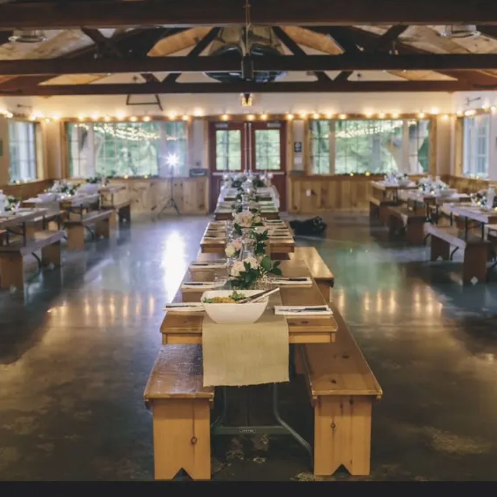
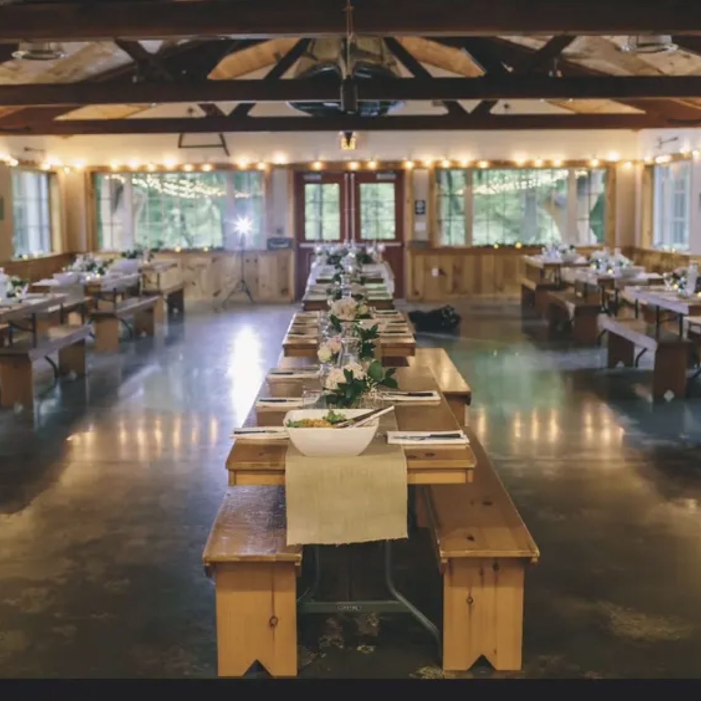

Ashokan Center
The Ashokan Center is a 385-acre outdoor education, conference, and retreat center. It is famous in the folk music community for its summer music camps and festivals.
 

Trails, lake, and sauna
There are multiple hiking trails on the property, leading past a beautiful waterfall up nearby mountains. The sauna is located right by the lake, perfect for a cold plunge.
Location
The Ashokan Center is approximately 100 miles north of New York City. The drive typically takes around 2 to 2.5 hours, depending on traffic.
477 Beaverkill Road, Olivebridge, NY 12461